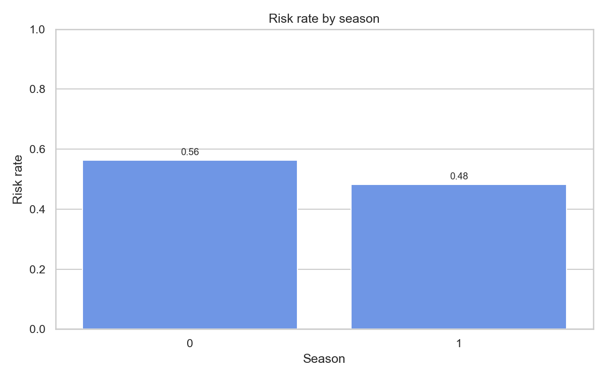
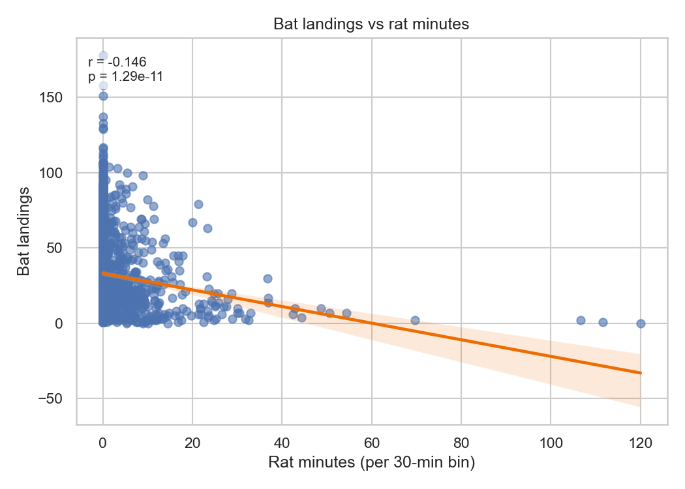

Bat vs. Rat: The Forage Files — Descriptive & Inferential Analysis in Python
dataset1 columns: start_time, bat_landing_to_food, habit, rat_period_start, rat_period_end, seconds_after_rat_arrival, risk, reward, month, sunset_time, hours_after_sunset, season
dataset2 columns: time, month, hours_after_sunset, bat_landing_number, food_availability, rat_minutes, rat_arrival_number


| | OR | CI_lower | CI_upper | p_value | |:--------------------------|-------:|-----------:|-----------:|----------:| | C(season)[T.1] | 0.6987 | 0.4891 | 0.9983 | 0.0489 | | hours_after_sunset | 0.9491 | 0.8987 | 1.0023 | 0.0602 | | seconds_after_rat_arrival | 1.0003 | 0.9998 | 1.0009 | 0.2795 |
Conclusion: Evidence supports that bats perceive rats as potential predators.
- Limitations: Observational data; some missing values; potential unobserved confounders (weather, microhabitat).
Environment: Python 3.9.7, macOS, pandas 1.5.3, numpy 1.23.5, matplotlib 3.6.3, scipy 1.10.1, statsmodels 0.13.5
Raw CSV files are stored in ../data/ folder. All data processing and analysis done through Python scripts.